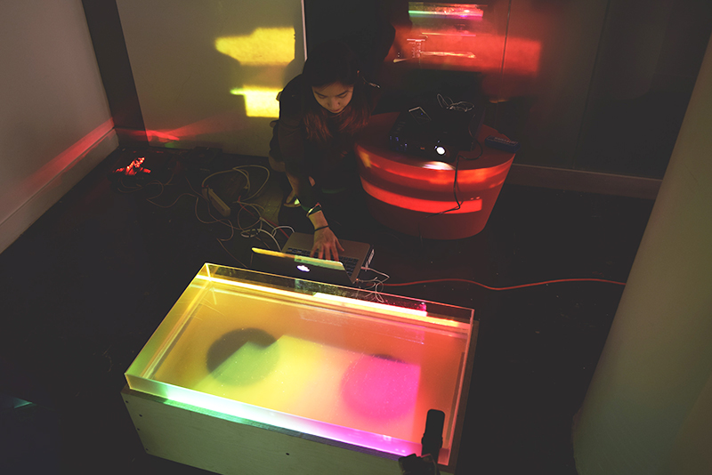
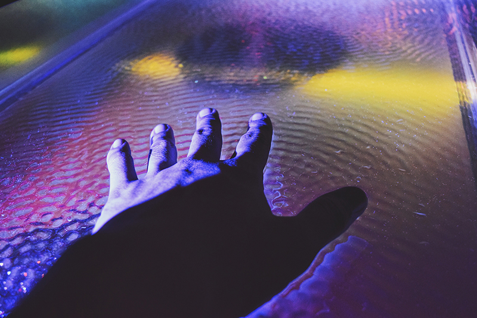
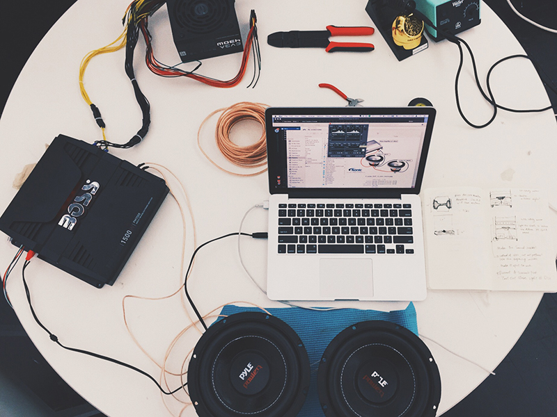
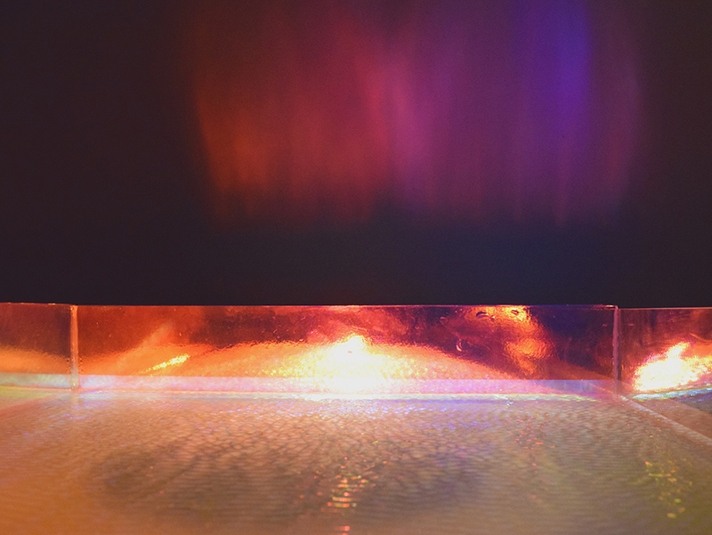

“If you wish to understand the Universe think of energy, frequency, and vibration,” says Nikola Tesla. By connecting the energy of lights(reflection/refraction), the vibration of water, and the frequency of sound, Cupola demonstrates how technology can inhabit the realm of nature by illustrating its most beautiful form: the wave.

“Whenever we experience something, we are taking part of the world. Taking part in the world is really about sharing responsibility,” says Oliver Eliasson, a Danish installation artist. The more we experience the majesty and the complexity of nature, the more we put our humanity into proper perspective.

Through the research on neuroscience and perceptual psychology, and the process of material testing, cymatic experiments, lighting exploration, and spatial transformation, Cupola exercises the potential of technology being presented in an organic and natural way.

Cupola represents the importance in perceiving ourselves as "the catalyst of evolution,” and utilize technology as a tool to connect us to the world and understand the complexity of the universe.